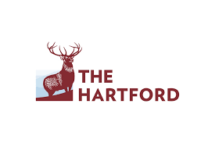

Projects

Customer Churn Prediction - The Hartford Insurance Group
Designed a predictive model to classify customers at risk of policy cancellation with 84% accuracy. Implemented a two-step modeling approach to differentiate between flat-term and mid-term cancellations, improving customer retention efforts.

Claim Cost Prediction - Travelers Insurance
Developed an advanced predictive model combining Poisson classification and Inverse Gaussian regression to enhance claim severity predictions. Achieved top benchmark scores in predictive modeling competitions using statistical and machine learning techniques.